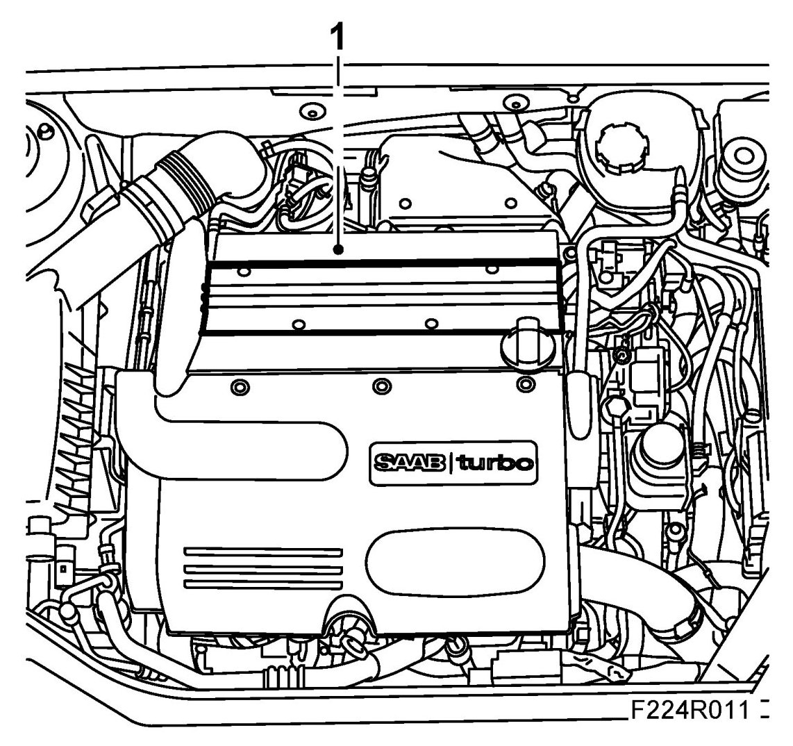
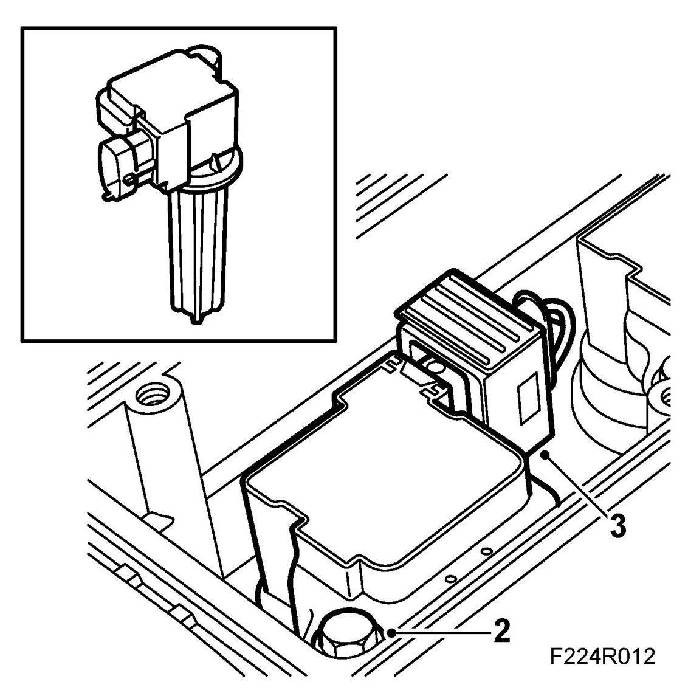
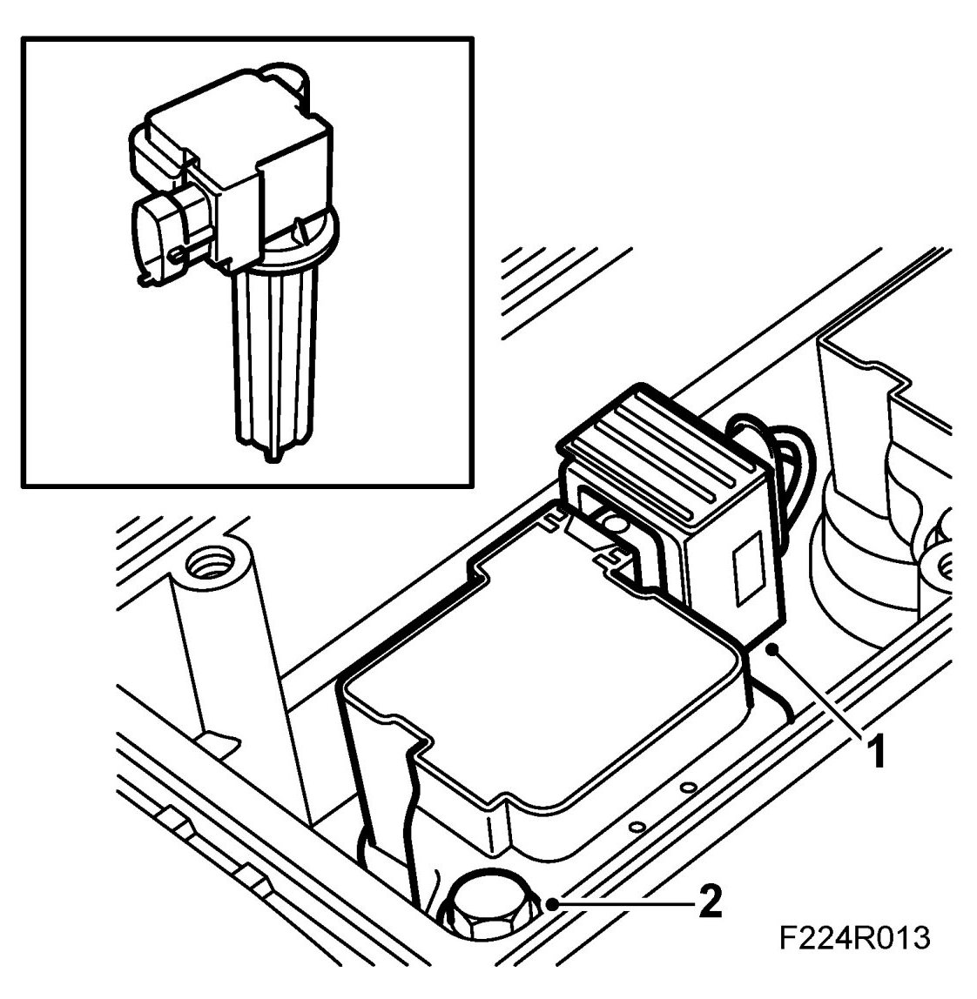
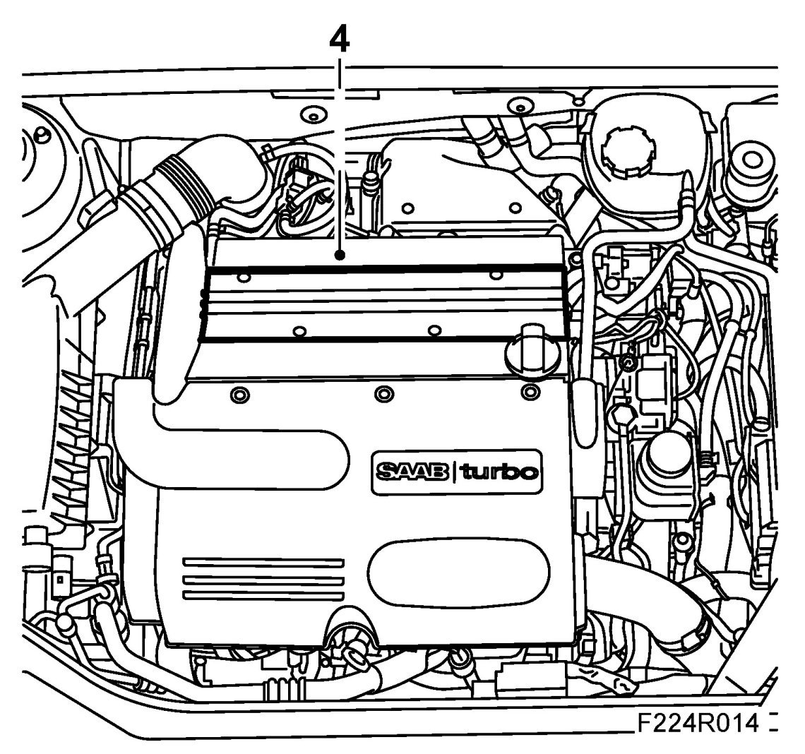

Ignition Coil: Service and Repair
Ignition Coil With Integrated Power Stage (320), B207
To remove
1. Remove cover over ignition coils.

2. Remove the ignition coil.

3. Unplug the ignition coil connector.
To fit
1. Attach the connector.

2. Fit the ignition coil.
Tightening torque 20 Nm (15 lbf ft)
3. Make sure to locate the ignition coil cables so they are not pinched.
4. Fit the cover over the ignition coils.
Tightening torque 8 Nm (6 lbf ft)
